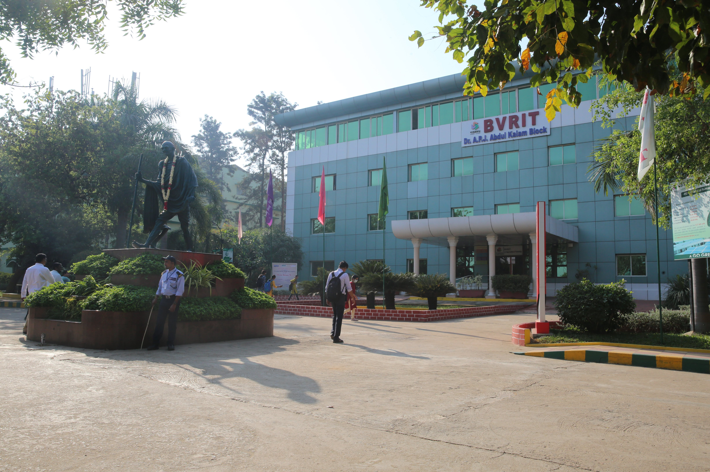

Padmasri BV Raju Institute of Technology

Padmasri BV Raju Institute of Technology
Imparting quality education & training. Developing disciplined personalities.
Padmasri BV Raju Institute of Technology
Facilitating faculty and supporting staff to update their knowledge and skills...
Learning Resources
Academic Videos
EXPLORECalculators
EXPLOREProgramming Quizzes
EXPLORERoadmap Generator
EXPLOREStudent GPT
EXPLOREResume Analyzer
EXPLOREProjects & Aptitude
EXPLOREUseful Platforms
EXPLOREDocumentations
EXPLOREQuestion Papers
EXPLORECourse Structure
EXPLOREBVRIT PDFs
EXPLOREText Books
EXPLOREContact Information
B.V.Raju Institute of Technology
Established: 1997
EAMCET Code: BVRI
Address
Vishnupur, Narsapur, Medak Dist, Telangana - 502313